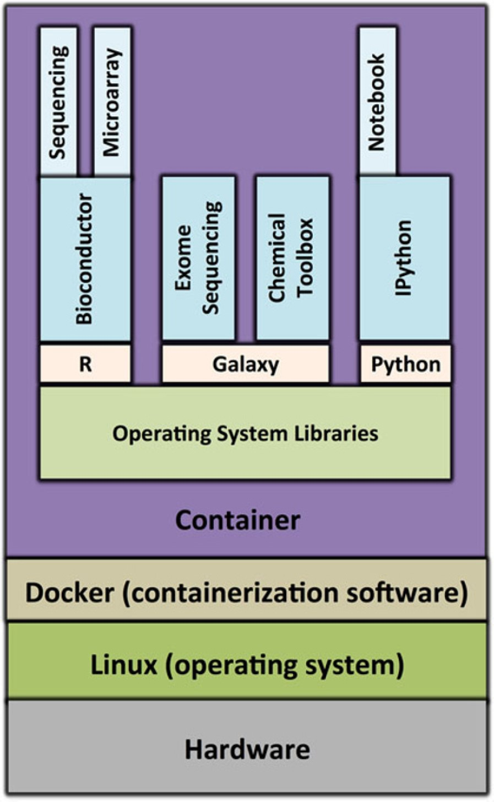
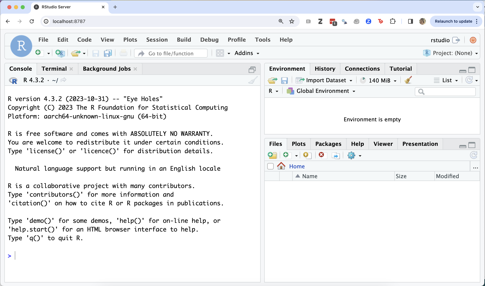
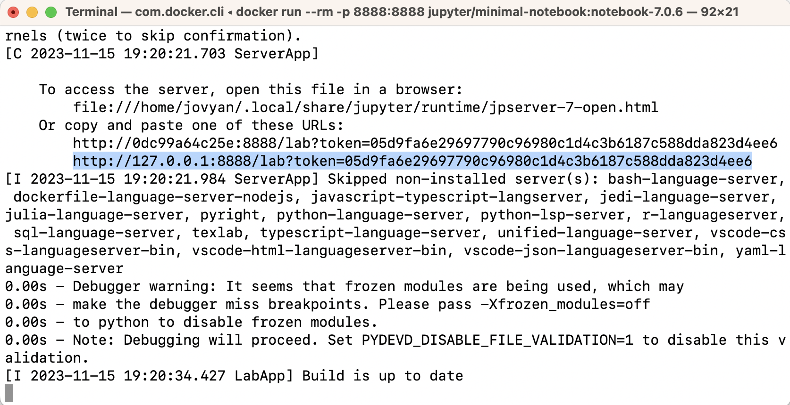
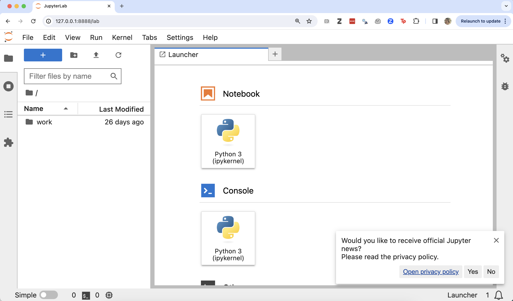
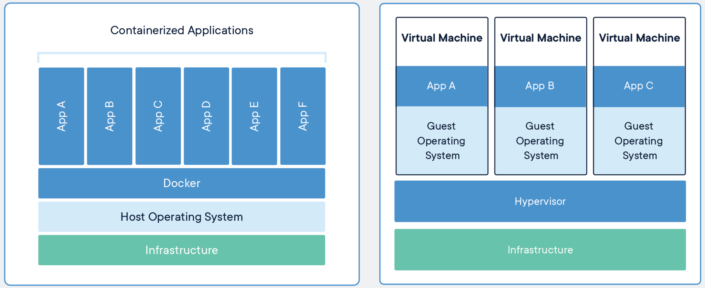
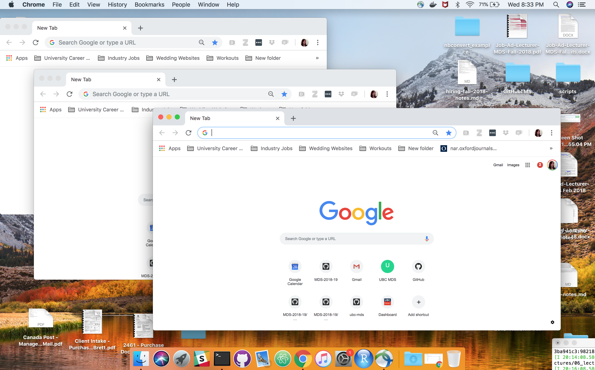

10 Introduction to containerization
Learning Objectives
- Explain what containers are, and why they can be useful for reproducible data analyses
- Discuss the advantages and limitations of containerization (e.g., Docker) in the context of reproducible data analyses
- Compare and contrast the difference between running software/scripts in a virtual environment, a virtual machine and a container
- Evaluate, choose and justify an appropriate environment management solution based on the data analysis project’s complexity, expected usage and longevity.
10.1 Documenting and loading dependencies
You’ve made some beautiful data analysis pipeline/project using make, R, and/or Python. It runs on your machine, but how easily can you, or someone else, get it working on theirs? The answer usually is, it depends…
What does it depend on?
Does your
READMEand your scripts make it blatantly obvious what programming languages and packages need to run your data analysis pipeline/project?Do you also document the version numbers of the programming languages and packages you used? This can have big consequences when it comes to reproducibility… (e.g.,the change to random number generation in R in 2019?)
Did you document what other software (beyond the the programming languages and packages used) and operating system dependencies are needed to run your data analysis pipeline/project?
Virtual environments can be tremendously helpful with #1 & #2, however, they may or may not be helpful to manage #3… Enter containerization as a possible solution!
10.2 What is a container?
Containers are another way to generate (and share!) isolated computational environments. They differ from virtual environments (which we discussed previously) in that they are even more isolated from the computers operating system, as well as they can be used share many other types of software, applications and operating system dependencies.
Before we can fully define containers, however, we need to define virtualization. Virtualization is a process that allows us to divide the the elements of a single computer into several virtual elements. These elements can include computer hardware platforms, storage devices, and computer network resources, and even operating system user spaces (e.g., graphical tools, utilities, and programming languages).
Containers virtualize operating system user spaces so that they can isolate the processes they contain, as well as control the processes’ access to computer resources (e.g., CPUs, memory and disk space). What this means in practice, is that an operating system user space can be carved up into multiple containers running the same, or different processes, in isolation. Below we show the schematic of a container whose virtual user space contains the: - R programming language, the Bioconductor package manager, and two Bioconductor packages - Galaxy workflow software and two toolboxes that can be used with it - Python programming language, iPython interpreter and Jupyter notebook package

Schematic of a container for genomics research. Source: https://doi.org/10.1186/s13742-016-0135-4
Running a simple container
To further illustrate what a container looks like, and feels like, we can use Docker (containerization software) to run one and explore. First we will run an linux (debian-flavoured) container that has R installed. To run this type:
docker run --rm -it rocker/r-ver:4.3.2When you successfully launch the container, R should have started. Check the version of R - is it the same as your computer’s version of R? Use getwd() and list.files() to explore the containers filesystem from R. Does this look like your computer’s filesystem or something else?
Type q() to quit R and exit the container.
Running a container with RStudio as a web app
Next, try to use Docker to run a container that contains the RStudio server web-application installed:
docker run --rm -p 8787:8787 -e PASSWORD="apassword" rocker/rstudio:4.3.2Then visit a web browser on your computer and type: http://localhost:8787
If it worked, then you should be at an RStudio Sign In page. To sign in, use the following credentials:
- username: rstudio
- password: apassword
The RStudio server web app being run by the container should look something like this:

Type Cntrl + C in the terminal where you launched the container to quit R and RStudio and exit the container.
Running a container with Jupyter as a web app
Next, try to use Docker to run a container that contains the Jupyter web-application installed:
docker run --rm -p 8888:8888 jupyter/minimal-notebook:notebook-7.0.6In the terminal, look for a URL that starts with http://127.0.0.1:8888/lab?token= (for an example, see the highlighted text in the terminal below). Copy and paste that URL into your browser.

The Jupyter web-application being run by the container should look something like this:

Type Ctrl + c in the terminal where you launched the container to quit Jupyter and exit the container.
10.3 Contrasting containers with virtual machines
Virtual machines are another technology that can be used to generate (and share) isolated computational environments. Virtual machines emulate the functionality an entire computer on a another physical computer. With virtual machine the virtualization occurs at the layer of software that sits between the computer’s hardware and the operating system(s). This software is called a hypervisor. For example, on a Mac laptop, you could install a program called Oracle Virtual Box to run a virtual machine whose operating system was Windows 10, as the screen shot below shows:

A screenshot of a Mac OS computer running a Windows virtual machine. Source: https://www.virtualbox.org/wiki/Screenshots
Below, we share an illustration that compares where virtualization happens in containers compared to virtual machines. This difference, leads to containers being more light-weight and portable compared to virtual machines, and also less isolated.

Source: https://www.docker.com/resources/what-container
Key take home: - Containerization software shares the host’s operating system, whereas virtual machines have a completely separate, additional operating system. This can make containers lighter (smaller in terms of size) and more resource and time-efficient than using a virtual machine.*
10.4 Contrasting common computational environment virtualization strategies
| Feature | Virtual environment | Container | Virtual machine |
|---|---|---|---|
| Virtualization level | Application | Operating system user-space | Hardware |
| Isolation | Programming languages, packages | Programming languages, packages, other software, operating system dependencies, filesystems, networks | Programming languages, packages, other software, operating system dependencies, filesystems, networks, operating systems |
| Size | Extremely light-weight | light-weight | heavy-weight |
10.5 Virtualization strategy advantages and disadvantages for reproducibility
Let’s collaboratively generate a list of advantages and disadvantages of each virtualization strategy in the context of reproducibility:
10.5.1 Virtual environment
Advantages
- Extremely small size
- Porous (less isolated) - makes it easy to pair the virtualized computational environment with files on your computer
- Specify these with a single text file
Disadvantages
- Not always possible to capture and share operating system dependencies, and other software your analysis depends upon
- Computational environment is not fully isolated, and so silent missed dependencies
10.5.2 Containers
Advantages
- Somewhat light-weight in size (manageable for easy sharing - there are tools and software to facilitate this)
- Possible to capture and share operating system dependencies, and other software your analysis depends upon
- Computational environment is fully isolated, and errors will occur if dependencies are missing
- Specify these with a single text file
- Can share volumes and ports (advantage compared to virtual machines)
Disadvantages
- Possible security issues - running software on your computer that you may allow to be less isolated (i.e., mount volumes, expose ports)
- Takes some effort to share volumes and ports (disadvantage compared to virtual environments)
10.5.3 Virtual machine
Advantages
- High security, because these are much more isolated (filesystem, ports, etc)
- Can share an entirely different operating system (might not so useful in the context of reproducibility however…)
Disadvantages
- Very big in size, which can make it prohibitive to share them
- Takes great effort to share volumes and ports - which makes it hard to give access to data on your computer
10.6 Container useage workflow
Below is a schematic of typical container useage workflow from a blog post by Arnaud Mazin. The source code for container images is stored in a file called a Dockerfile. Similar to an environment.yml file, you would typically version control this with Git and store this in your GitHub repository with your analysis code. From the source Dockerfile we can build a Docker container image. This image is a binary file, from which we can run one, or more, container instances. Container instances are the computational environment in which you would run your analysis. Containers are usually ephemeral - we create them from the image when we want to run the analysis and then stop and remove/delete them after it has run. Docker images can (and should be) versioned and shared via container registries (which are akin to remote code repositories).

Source: OctoTalks
10.7 Image vs container?
Analogy: The program Chrome is like a Docker image, whereas a Chrome window is like a Docker container.

You can list the container images on your computer that you pulled using Docker via: docker images. You should see a list like this when you do this:
$ docker images
REPOSITORY TAG IMAGE ID CREATED SIZE
rocker/rstudio 4.3.2 bc76e0dbd6db 9 days ago 1.87GB
rocker/r-ver 4.3.2 c9569cbc2eb0 9 days ago 744MB
continuumio/miniconda3 23.9.0-0 55e8b7e3206b 3 weeks ago 457MB
jupyter/minimal-notebook notebook-7.0.6 e04c3bedc133 3 weeks ago 1.45GB
hello-world latest b038788ddb22 6 months ago 9.14kBYou can list the states of containers that have been started by Docker on your computer (and not yet removed) via: docker ps -a:
CONTAINER ID IMAGE COMMAND CREATED STATUS PORTS NAMES
9160100c7d4b rocker/r-ver:4.3.2 "R" 5 seconds ago Up 4 seconds friendly_merkle
0d0871c90313 rocker/rstudio:4.3.2 "/init" 33 minutes ago Up 33 minutes 0.0.0.0:8787->8787/tcp, :::8787->8787/tcp exciting_kepler10.8 What is a container registry
A container registry is a remote repository, or collection of repositories, used to share container images. This is similar to remote version control repositories for sharing code. Instead of code however, it is container images that are pushed and pulled to/from there. For this course we will focus on the widely-used DockerHub container registry: https://hub.docker.com/.
However, there are many container registries that can be used, including: - https://github.com/ (yes! GitHub now also hosts container images in addition to code!) - https://quay.io/ - https://aws.amazon.com/ecr/ (yes! Amazon now also hosts container images too!)
Exploring container registries
Let’s visit the repositories for the two container images that we used in the exercise earlier in class:
Question: how did we get the images for the exercise earlier in class? We were just prompted to type docker run...
Answer: docker run ... will first look for images you have locally, and run those if they exist. If they do not exist, it then attempts to pull the image from DockerHub.
10.9 How do we specify a container image?
Container images are specified from plain text files! In the case of the Docker containerization software, we call these Dockerfiles. We will explain these in more detail later, however for now it is useful to look at one to get a general idea of their structure:
Example Dockerfile:
FROM continuumio/miniconda3
# Install Git, the nano-tiny text editor and less (needed for R help)
RUN apt-get update && \
apt-get install --yes \
git \
nano-tiny \
less
# Install Jupyter, JupterLab, R & the IRkernel
RUN conda install -y --quiet \
jupyter \
jupyterlab=3.* \
r-base=4.1.* \
r-irkernel
# Install JupyterLab Git Extension
RUN pip install jupyterlab-git
# Create working directory for mounting volumes
RUN mkdir -p /opt/notebooks
# Make port 8888 available for JupyterLab
EXPOSE 8888
# Copy JupyterLab start-up script into container
COPY start-notebook.sh /usr/local/bin/
# Change permission of startup script and execute it
RUN chmod +x /usr/local/bin/start-notebook.sh
ENTRYPOINT ["/usr/local/bin/start-notebook.sh"]
# Switch to staring in directory where volumes will be mounted
WORKDIR "/opt/notebooks"The commands in all capitals are Docker commands. Dockerfiles typically start with a FROM command that specifies which base image the new image should be built off. Docker images are built in layers - this helps make them more light-weight. The FROM command is usually followed by RUN commands that usually install new software, or execute configuration commands. Other commands in this example copy in needed configuration files, expose ports, specify the working directory, and specify programs to execute at start-up.
Demonstration of container images being built from layers
Let’s take a look at the Dockerfile for the jupyter/docker-stacks r-notebook container image: - Dockerfile
Questions: 1. What image does it build off? 2. What image does that build off? 3. And then the next one?